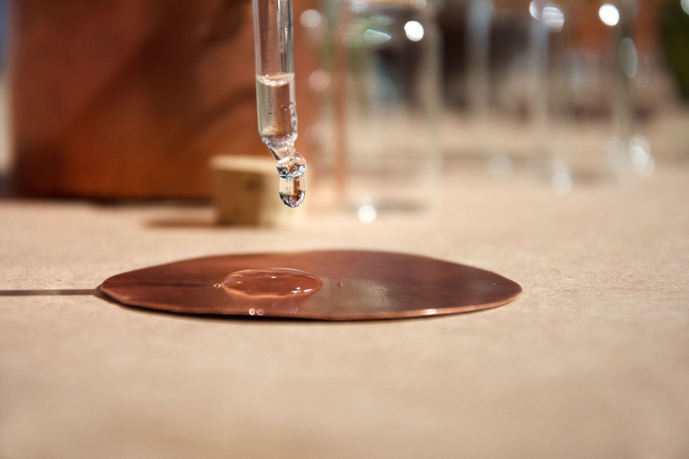
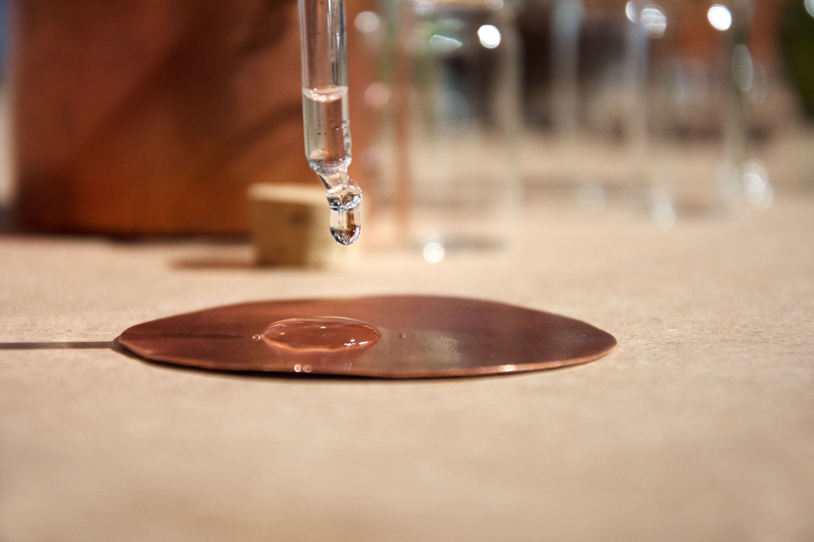

Home is diffrent for everyone, for some of us it is the mountains or the country itself and for others the people around them. But what happens when you have to leave your home:
Once, there was a boy called Peter. He lived in a small village with his mother, father and his younger sister. Everyone was happy. Each day Peter played on the greenest grass you’ve ever seen, went fishing with his friend and helped his friendly neighbors.
But the sad story is that Peter is not able to live there anymore. Because the protective dam who always was there couldn’t bear the wild water on the other side anymore. Peter and all the others had to leave their loving homes. It was not Peters fault but it was the fault of generations before him. So they left. With anger and sadness.
They went to a big city with grey walls and dirty brooks. This did not feel like home. And one by one went away. If only they could have taken «home» with them.
And the story of Peter is not the only one. We want to find a way to give people the feeling of home, when they need it the most.
So unterschiedlich die Heimat auch sein kann, vebindet wird sie fast durchgehen mit dem geruch. Der Geruch ist ein Speicher unserer Erinnerung und Gefühlen und das schon seit dem ersten Tag. Wie kann man also jemanden mehr Heimat mitgeben als mit dem geruch von vertrautem und geborgenem?
In unserem handgemachten kit befindet sich alles was man zum destillieren und aufbewahren einer erinnerung braucht. Die kleine kupfer destille ist praktisch für unterwegs und kann auch mit einfach Kerzen beheizt werden. Mit einem Sieb kann das rohmaterial sowohl ausserhalb als auch im Wasser destilliert werden.
 
